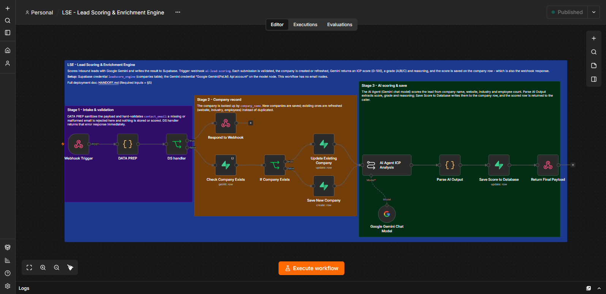
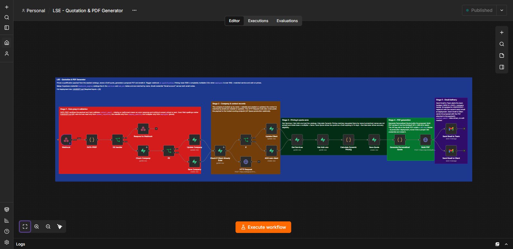
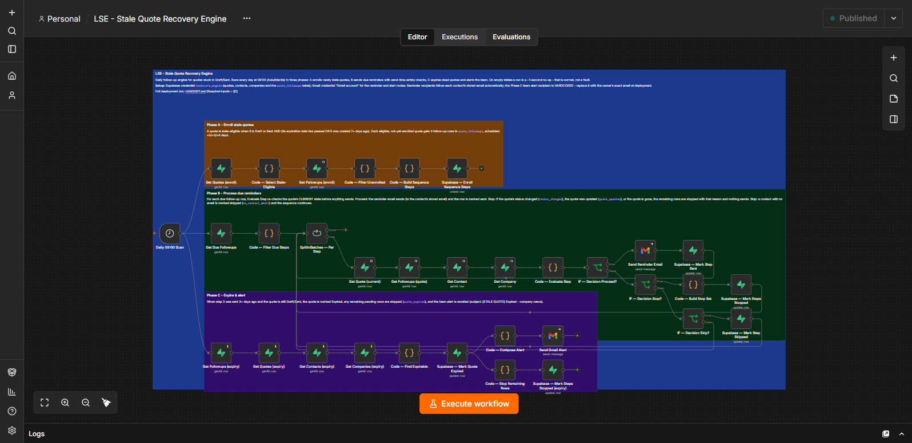
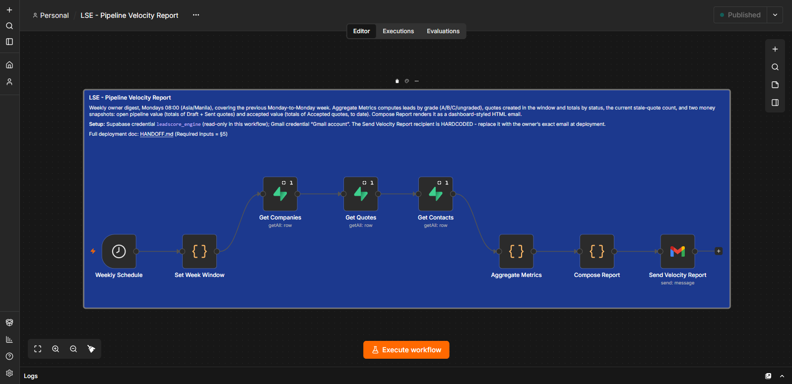

LeadScore Engine
target: sales-led SMBs (fictional demo data in the simulation)
input: the problem
Inbound leads get scored by gut feel — or not at all. Quotes sit in Draft and Sent until they go cold, nobody chases them, and the owner only sees the pipeline slowing down when the month is already lost.
output: the system
A 4-workflow suite: Gemini scores every lead (ICP 0–100, grade, written reasoning, saved to the database), quotes are priced from live catalogs and sent as PDF proposals, stale quotes get chased daily with a 3-touch sequence that stops the moment anything changes, and a Monday dashboard digest reports the pipeline in money, not process timings.
Lead Scoring & Enrichment
Leads arrive via webhook; company and contact are saved, then Gemini scores fit (0–100 + grade + reasoning) and writes it back.

full size ↗Quotation & PDF Generator
Base × complexity multiplier + catalog services and add-ons; a real PDF proposal is generated and emailed to the client, with a team alert.

full size ↗Stale Quote Recovery
Daily 09:00 scan enrolls stale quotes into +0/+3/+6-day reminders, with a stop check before every send; dead quotes expire with a team alert.

full size ↗Pipeline Velocity Report
Monday 08:00 dashboard-styled HTML digest: leads by grade, quotes by status, open pipeline value, accepted value, stale count.

full size ↗System overview diagram ↗ — 4 independent workflows, one shared Supabase database; no workflow calls another. Prefer a schematic? Rendered diagrams: WF01 · WF02 · WF03 · WF04
architecture
- Supabase is the system of record — companies, contacts, quotes, service/add-on catalogs, follow-up sequences.
- AI scores, rules price — Gemini judges lead fit with written reasoning; pricing is deterministic catalog math (base × complexity + services + add-ons).
- Recovery with manners — every reminder is re-checked before sending (status changed / quote updated / no contact email), and client copy never shows a "reminder N of 3" counter.
- Owner-first reporting — the digest leads with open pipeline and accepted value; an internal timing KPI was removed because it read as a performance grade.
- Full-lifecycle simulation, live — an accelerated end-to-end run over a seeded lifecycle dataset (Gmail enabled) proved the whole cycle: enrollment → reminders at +0/+3/+6 days → expiry + team alert → weekly digest. Both decision stops fired correctly (a repriced quote stopped as quote_updated; a converted quote stopped as status_changed), the no-contact-email skip and the expiry stop-remaining path were proven in enabled mode, and all 19 sends are accounted for. The digest over that data — open pipeline 32,800 · accepted value 30,800 · stale 5 — matched independent recomputation on all 14 fields.
- Tested in the enabled configuration — a visual review of every output caught a production-only bug that disabled-node testing had masked; fixed and re-verified live.
tech stack
 n8n
n8n Supabase
Supabase Google Gemini
Google Gemini
▶ Try the Interactive Simulation
// the simulation runs 100% in your browser with fictional data — it is not connected to any live system
// scope: 4 workflows · verified live end-to-end 2026-10-09 · Gemini test scores 45 (C) and 75 (A) with reasoning · verified quote total 4,250.00 with a 306 KB PDF · digest metrics matched independent recomputation 14/14 in three rounds, and again over a full-lifecycle simulation (19 accounted sends, both decision stops + the no-email skip proven with email enabled) · the suite arrived broken (its database tables had never been created) — the schema was rebuilt from the workflows' actual usage, and three pre-existing bugs were found and fixed along the way